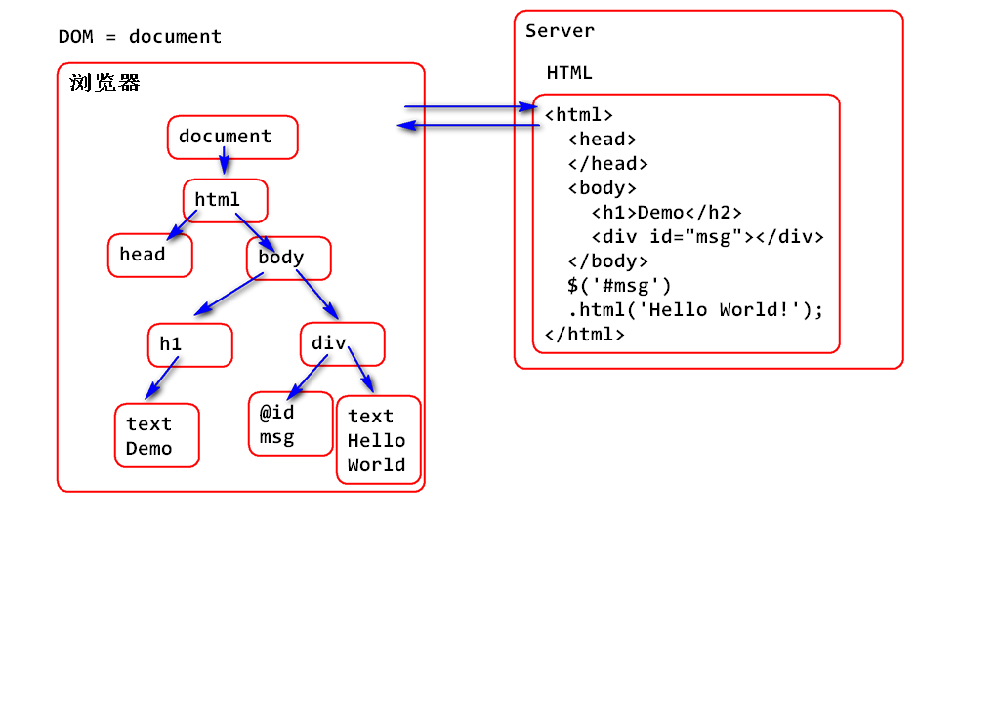

JQuery
什么是JQuery
- 封装了 Dom和CSS,JS等, 提供了更加简便的操作API
- 是函数式编程。
- 核心API体积小，加载速度快。
跨浏览器使用，解决了浏览器的兼容问题。（IE8 以前的除外）
其口号：写的少做的多
使用JQuery
导入JQuery API
<script src="jquery.js">编辑HTML, 在HTML中添加需要操作的 HTML标签。
<div id="msg"></div>使用JQuery操作 div
<script> $('#msg').html('Hello World!'); </script>
案例：
<!DOCTYPE html>
<html>
<head>
<meta charset="UTF-8">
<title>Insert title here</title>
</head>
<body>
<h1>JQuery Hello World!</h1>
<div id="msg"></div>
<script type="text/javascript"
src="../js/jquery-3.1.1.min.js"></script>
<script type="text/javascript">
$('#msg').html('Hello World!');
</script>
</body>
</html>
认识Dom
HTML部署在服务器端，当HTML被下载到浏览器中后被解析为DOM对象，显示在窗口中。 引用DOM对象的变量是document。

JQuery 对象
由 $() 返回的对象称为JQuery对象。
var obj = $('#msg');JQuery 对象，扩展于 JS Array 对象。
- JQuery 对象，在Array基础之上扩展了非常的多的方法！！！
- JQuery API 方法可以操作数组中每个对象。
推广：如何将JQuery和Dom对象相互转换
- JQuery对象转换为DOM，利用下标取JQuery对象的元素，就得到DOM对象
- DOM对象转换为JQuery，$(dom对象)得到JQuery对象
为何需要转换：
- 如果需要操作Dom对象API，则需要将JQuery对象转换DOM对象。
- 如果得到DOM需要利用JQueryAPI时候，则需要将DOM转换为JQuery对象。
案例：
<!DOCTYPE html>
<html>
<head>
<meta charset="UTF-8">
<title>JQuery Demo</title>
</head>
<body>
<h1>认识JQuery对象</h1>
<p>JQuery 对象，扩展于 JS Array 对象</p>
<div class="demo">A</div>
<div class="demo">B</div>
<div class="demo">C</div>
<div class="demo">D</div>
<script type="text/javascript"
src="../js/jquery-3.1.1.min.js"></script>
<script type="text/javascript">
//使用JQuery选择一组对象，$()返回值是一个数组
var obj = $('.demo');
console.log(obj);//每个数组元素是一个dom<div>对象
console.log(obj[0]);
console.log(obj[1]);
console.log(obj[2]);
console.log(obj[3]);
//操作JQuery中每个对象，将每个对象html中的文本都改了
obj.html("demo");
//为数组扩展方法
var arr = ["Tom", "Jerry", "熊大"];
arr.test = function(){
console.log("Hello World!");
};
arr.test();
</script>
</body>
</html>
为数组扩展方法
var arr = ["Tom","Jerry","熊大"];
arr.test=function(){
console.log("Hello World!");
};
arr.test();
$() 函数用途：
- $(选择器) 选择一组dom对象作为JQuery对象的元素.
- $(DOM对象) 将对象作为JQuery中的元素，返回JQuery对象
$(“HTML元素字符串”) 将HTML解析为DOM对象作为JQuery的元素，返回JQuery对象。 目的是将字符解析为Dom对象，然后添加到页面中。
$('<span>abc</span>')$(function(){}) 在页面加载以后执行的方法。
案例：
<!DOCTYPE html>
<html>
<head>
<meta charset="UTF-8">
<title>Insert title here</title>
</head>
<body>
<h1>$()函数的使用</h1>
<div id="msg"></div>
<script type="text/javascript"
src="../js/jquery-3.1.1.min.js"></script>
<script type="text/javascript">
//页面加载以后执行的函数
$(function(){
console.log("Hello World");
});
//可以多次注册$(function(){})函数，启动时候都会被执行。
$(function(){
//利用$()函数将字符串转换为JQuery对象
var span=$("<span>test</span>");
//append()将span追加到 div 元素中
$("#msg").append(span);
});
</script>
</body>
</html>
选择器
JQuery 基本选择器
ID选择器
$("#id") 选择指定的id元素类选择器
$(".class") 选择一组 class 一致的元素元素选择器
$('div') 选择全部div元素组选择器
$("div, p, span")
组选择器案例:
<!DOCTYPE html>
<html>
<head>
<meta charset="UTF-8">
<title>Insert title here</title>
</head>
<body>
<h1>组选择器</h1>
<input type="button" id="test" value="测试">
<div></div>
<p></p>
<span></span>
<script type="text/javascript"
src="../js/jquery-3.1.1.min.js"></script>
<script type="text/javascript">
$(function(){
//click()事件绑定方法，可以在对象被点击
//时候执行事件方法
$("#test").click(function(){
//组选择器，选择了 div p 和span元素
$("div,p,span").html("test");
});
});
</script>
</body>
</html>
事件绑定（简介）
选择需要绑定事件的元素，然后使用 click() 方法绑定事件
$("#test").click(function(){
console.log("test");
});
失去焦点事件, 经常用于处理表单项目验证
$("#username").blur(function(){
console.log("blur");
});
层级关系选择器
派生，子孙后代
$(".menu .item") 选择子孙 $("ul > li") 子选择器后一个选择器
$('#username + span') 选择 #username 的后一个 span兄弟选择后续全部的兄弟元素
$('h2 ~ p') 选择h2元素同级别的全部后续兄弟p元素
案例0：
<!DOCTYPE html>
<html>
<head>
<meta charset="UTF-8">
<title>Insert title here</title>
</head>
<body>
<h1>JQuery 选择器</h1>
<ul class="demo">
<li>Java</li>
<li>PHP</li>
<li>C++</li>
</ul>
<script type="text/javascript"
src="../js/jquery-3.1.1.min.js"></script>
<script type="text/javascript">
$(function(){
$(".demo>li").append("好");
});
</script>
</body>
</html>
案例1：
<!DOCTYPE html>
<html>
<head>
<meta charset="UTF-8">
<title>Insert title here</title>
<style type="text/css">
.error{
color: red;
}
</style>
</head>
<body>
<h1>兄弟选择器</h1>
<h2>注册</h2>
<form action="">
<div>
<label>用户名</label>
<input id="username" name="username">
<span></span>
</div>
</form>
<script type="text/javascript"
src="../js/jquery-3.1.1.min.js"></script>
<script type="text/javascript">
$(function(){
//blur() 用于绑定失去焦点事件，当输入控件
//失去焦点时候，会执行事件方法
$('#username').blur(function(){
console.log("blur");
//1. 获取输入框数据
//val() 必须在表单项上调用，获取标签中的值
var val = $('#username').val();
//2. 检查数据格式
if(! val){ //如果没有值就显示错误消息
//3. 如果检查失败 就 在span中显示失败消息
$('#username + span').addClass('error')
.html('错了！');
//next() 获取当前元素的后一个节点
//$('#username').next()
//prev() 获取当前元素的前一个兄弟节点
$('#username').prev().addClass('error');
//几乎所有的JQueryAPI方法返回的都是JQuery
//对象，这时可以连续调用JQuery对象提供的
//API方法。
}else{
//empty()清空span元素的内容
$('#username').next().empty();
//清除 label 上的error红色
$('#username').prev()
.removeClass('error');
}
});
});
</script>
</body>
</html>
案例2：
<!DOCTYPE html>
<html>
<head>
<meta charset="UTF-8">
<title>Insert title here</title>
</head>
<body>
<h1>选择器</h1>
<p>选择当前元素开始，后续全部的兄弟元素</p>
<h2>JQuery API</h2>
<p>选择器</p>
<p>dom操作</p>
<p>事件绑定</p>
<script type="text/javascript"
src="../js/jquery-3.1.1.min.js"></script>
<script type="text/javascript">
//选择 h2 开始后续的 p 元素 'h2 ~ p'
$(function(){
$('h2 ~ p').append("OK");
});
</script>
</body>
</html>
过滤选择器
在选择器中过滤保留满足条件的元素：
选择全部 tr 中的偶数行: 0 2 4 6 8
$('tr:even').css('background-color','#eee');选择全部 tr 中的奇数行: 1 3 5 7 …
$('tr:odd').css('background-color','#ddd');选择全部 tr 中的第一行:
$('tr:first').css('background-color','#000').css('color', '#fff');选择全部 tr 中的最后行:
$('tr:last').css('background-color','#0f0').css('color', '#f00');选择tr的2行：index： 0 1 2 3 4
$('tr:eq(2)').css('color','#f00');
案例：
<!DOCTYPE html>
<html>
<head>
<meta charset="UTF-8">
<title>Insert title here</title>
</head>
<body>
<h1>过滤器</h1>
<table id="tbl">
<tr>
<td>编号</td><td>名称</td>
</tr>
<tr>
<td>1</td><td>熊大</td>
</tr>
<tr>
<td>2</td><td>熊二</td>
</tr>
<tr>
<td>3</td><td>光头强</td>
</tr>
<tr>
<td>合计</td><td>3</td>
</tr>
</table>
<script type="text/javascript"
src="../js/jquery-3.1.1.min.js"></script>
<script type="text/javascript">
$(function(){
//偶数行浅灰色
//选择全部 tr 中的偶数行: 0 2 4 6 8
//JQuery API css()方法，作用是为每个被选中
//的元素添加“内联样式”
$('tr:even').css('background-color','#eee');
//奇数行深灰色
$('tr:odd').css('background-color','#ddd');
//首行 反白
$('tr:first').css('background-color','#000')
.css('color', '#fff');
$('tr:last').css('background-color','#0f0')
.css('color', '#f00');
//选中指定序号的行
$('tr:eq(2)').css('color','#f00');
});
</script>
</body>
</html>
内容选择
选择包含特定文本的元素：
$('li:contains("Java")').append("OK");选择空元素
$('li:empty').html("Web前端");选择包含指定元素的元素：
$('li:has(a)').append('a');
案例：
<!DOCTYPE html>
<html>
<head>
<meta charset="UTF-8">
<title>Insert title here</title>
</head>
<body>
<h1>JQuery 内容选择</h1>
<div>
<h2>Java课程内容</h2>
<ul>
<li>Java基础</li>
<li>Java核心API</li>
<li></li>
<li>MySQL<a href="#">数据库</a></li>
<li><a href="#">JDBC</a></li>
</ul>
</div>
<script type="text/javascript"
src="../js/jquery-3.1.1.min.js"></script>
<script type="text/javascript">
$(function(){
//根据内容选择
$('li:contains("Java")').append("OK");
//找到空的li 在里面写上"web前端"
$('li:empty').html("Web前端");
//找到包含a元素的li，在尾部追加 “a”
$('li:has(a)').append('a');
});
</script>
</body>
</html>
选择显示、隐藏的元素
选择隐藏的元素：
$('#menu > .sub:visible').hide(500);
案例：
<!DOCTYPE html>
<html>
<head>
<meta charset="UTF-8">
<title>Insert title here</title>
<style type="text/css">
#menu{
width: 100px;
}
.sub{
background-color: #eee;
}
.item{
background-color: #ddd;
}
</style>
</head>
<body>
<h1>选择显示、隐藏的元素</h1>
<div id="menu">
<div class="item">Java基础</div>
<div class="sub">
变量，数据类型
流程控制，面向对象
</div>
<div class="item">Java 核心API</div>
<div class="sub">
String, Object, 集合, Thread, IO,
Stream, Network
</div>
</div>
<script type="text/javascript"
src="../js/jquery-3.1.1.min.js"></script>
<script type="text/javascript">
$(function(){
//监听鼠标悬停事件
$('#menu > .item').mouseover(function(){
//console.log('Over');
//.hide() 通过设置内联样式，隐藏元素
$('#menu > .sub:visible').hide(500);
//this 代表响应“当前”事件的dom元素
$(this).next().show(500);
});
});
</script>
</body>
</html>
属性选择器
使用属性选择器选择 属性type是submit的元素
$("input[type='submit']").val("开始注册");
案例：
<!DOCTYPE html>
<html>
<head>
<meta charset="UTF-8">
<title>Insert title here</title>
</head>
<body>
<h1>属性选择器</h1>
<h2>注册</h2>
<form action="">
<div>
<label>姓名：</label>
<input id="name" type="text" >
<span></span>
</div>
<div>
<label>电话：</label>
<input id="mobile" type="text">
<span></span>
</div>
<div>
<label>密码：</label>
<input id="password"
type="password">
<span></span>
</div>
<div>
<label>确认密码：</label>
<input id="confirm"
type="password">
<span></span>
</div>
<div>
<label>角色：</label>
<input id="admin" type="checkbox"
value="100" name="role">
<label for="admin">管理员</label>
<input id="admin01" type="checkbox"
value="200" name="role">
<label for="admin01">男宿舍管理员</label>
<input id="user" type="checkbox"
value="300" name="role">
<label for="user">群众</label>
<span></span>
</div>
<div>
<input type="submit" value="注册">
</div>
</form>
<script type="text/javascript"
src="../js/jquery-3.1.1.min.js"></script>
<script type="text/javascript">
$(function(){
//使用属性选择器选择 属性type是submit的元素
$("input[type='submit']").val("开始注册");
//获取form的第一个div子元素
$('form div:first-child').css(
'background-color','#eee');
//获取form的最后一个div子元素
$('form div:last-child').css(
'background-color','#000');
});
</script>
</body>
</html>
子选择器
选择form的第一个div子元素
$('form div:first-child').css('background-color','#eee');
选择form的最后一个div子元素
$('form div:last-child').css('background-color','#000');
表单选择器
选择全部的checkbox：
$("input:checkbox")
选择name是role，的全部checkbox
$("input[name='role']:checkbox")
选择 name是role 中被选中的 checkbox
$("input[name='role']:checked")
练习
- 重复完成课堂案例
- 编写一个表单包含文本输入框，密码框，下拉选择框，单选框，复选框。 然后添加一个按钮在点击按钮事件中 使用表单选择器选择元素并且输出：
- 全部文本框中的值
- 全部密码框中的值
- 获取单选框中的选中值
- 复选框的中的选中值
###回顾：
####选择器
- 基础选择器
- 标签名选择器 $(“div”)
- id选择器 $(“#id”)
- class选择器 $(“.class”)
- 分组选择器 $(“div,span”)
- 任意元素选择器 $(“*”)
- 层级选择器
- 子孙后代选择器 div span
- 子元素选择器 div>span
- 弟弟元素选择器 #id+span
- 弟弟们元素选择器 #id~span
- 层级方法：
- 兄弟元素 $(“#id”).siblings(“div”);
- 哥哥元素 $(“#id”).prev();
- 哥哥们元素 $(“#id”).prevAll();
- 弟弟元素 $(“#id”).next();
- 弟弟们元素 $(“#id”).nextAll();
- 过滤选择器
- 第一个div $(“div:first”)
- 最后一个div div:last
- 奇数 div:odd
- 偶数 div:even
- 等于 div:eq(n)
- 小于 div:lt(n)
- 大于 div:gt(n)
- class不为one div:not(.one)
- 内容选择器
- 空元素的div div:empty
- 非空元素的div div:parent
- 包含p的div div:has(p)
- 包含abc文本的div div:contains(‘id’)
- 可见选择器
- 可见div元素 div:visible
- 不可见div元素 div:hidden
- 元素隐藏显示的方法
- show(); 显示
- hide(); 隐藏
- toggle(); 隐藏显示切换
- 属性选择器
- 匹配包含id属性的div $(“div[id]”)
- 匹配id属性值为abc的div $(“div[id=’abc’]”)
- 匹配id属性值不为abc的div $(“div[id!=’abc’]”)
- 子元素选择器
- 匹配是div子元素并且是第一个 $(“div:first-child”)
- 匹配是div子元素并且是最后一个 $(“div:last-child”)
- 匹配是div子元素并且是第n个 $(“div:nth-child(n)”)
- 表单选择器
- 匹配所有表单中的控件 :input
- 匹配所有密码框 :password
- 匹配所有单选 :radio
- 匹配所有多选 :checkbox
- 匹配所有选中的单选、多选、下拉选 :checked
- 匹配所有的选中的单选和多选 input:checked
- 匹配所有选中的下拉选 :selected
###DOM操作
- 创建元素
var d = $(“abc“); - 添加元素
$(“#big”).append(d); //最后面
$(“#big”).prepend(d);//最前面 - 插入元素
兄弟元素.after(d);//插入到兄弟元素的后面
兄弟元素.before(d);//插入到兄弟元素的前面 - 删除元素
$(“#abc”).remove(); - 修改和获取元素的样式
$(“#abc”).css(“样式名称”,”样式的值”);
$(“#abc”).css(“样式名称”); //获取样式的值 - 修改和获取元素的文本内容
$(“#abc”).text();
$(“#abc”).text(“xxx”); - 修改和获取元素的html内容
$(“#abc”).html();
$(“#abc”).html(“xxx
“); - 修改和获取元素的属性
$(“#abc”).attr(“class”,”mm”);
$(“#abc”).attr(“class”);
###事件模拟
//触发元素的点击事件
$(“input”).trigger(“click”);